Code
import warnings
warnings.filterwarnings("ignore", module="plotnine")
import pandas as pd
import numpy as np
import seaborn as sns
import matplotlib.pyplot as plt
import plotnine as ggimport warnings
warnings.filterwarnings("ignore", module="plotnine")
import pandas as pd
import numpy as np
import seaborn as sns
import matplotlib.pyplot as plt
import plotnine as ggThis three-part series develops a probabilistic framework for DNA-encoded library (DEL) data. The goal is to explain noisy sequencing counts in terms of latent compound-level and synthon-level effects so that true enrichment can be separated from technical and compositional artefacts. Part 1 focuses on likelihood choice, data-generation assumptions, and the modelling implications of background effects, library composition, and replicate variation.
DNA-encoded libraries (DELs) are large collections of small molecules, each tagged with a unique DNA barcode that records its synthetic history. They enable high-throughput screening by allowing compounds to be pooled, selected, and then identified by sequencing. For a quick introduction, these two short videos give a useful overview: DNA-Encoded Libraries - A New Paradigm in Drug Design? and Learn DNA-Encoded Library technology for early drug discovery.
A DEL experiment involves several key stochastic steps that directly impact the statistical modelling of observed counts:
Thus, the observed DEL counts for each barcode are the outcome of a sequence of random processes, with amplification especially contributing to count heterogeneity.
It is useful to separate DEL count models by the data-generation assumption they make about sequencing depth.
1) Independent-barcode (rate-based) generation

2) Fixed-depth (composition-based) generation
A sample has a fixed total read depth N, and each read is assigned to exactly one barcode.
Barcodes therefore share a single pool of reads, inducing weak negative dependence between barcode counts.
This perspective naturally motivates Multinomial and Dirichlet-Multinomial, and the one-barcode marginal Binomial/Beta-Binomial.

Below are common likelihood choices for DEL count data. In practice, DEL data are often overdispersed (variance > mean) due to PCR/amplification and other multiplicative factors. They may also exhibit excess zeros because of true absence, synthesis failures, or aggressive filtering.
\[ X_i \sim \text{Poisson}(\lambda_i) \]
This likelihood belongs to the independent-barcode (rate-based) data-generation view, where each barcode produces counts according to its own latent rate.
Because sequencing counts in DEL experiments arise from random sampling of amplified DNA molecules, the sequencing step is often approximated using a Poisson distribution.
References:
\[ X_i \mid \lambda_i \sim \text{Poisson}(\lambda_i), \qquad \lambda_i \sim \text{Gamma}(\alpha, \beta) \]
or
\[ X_i \sim \text{NB}(\mu_i, \phi) \]
This likelihood also keeps the independent-barcode (rate-based) view but allows extra variability beyond Poisson.
Because DEL sequencing readouts often exhibit overdispersion due to amplification and selection variability, barcode counts can be modelled using a Negative Binomial distribution.
References:
\[ X_i \sim \text{ZIP}(\lambda_i, \pi_i) \]
or
\[ X_i \sim \text{ZINB}(\mu_i, \phi, \pi_i) \]
Zero-inflated Poisson and Zero-inflated Negative Binomial are extensions of the independent-barcode (rate-based) view, adding an extra mechanism for structural zeros on top of barcode-specific count generation.
These models assume that zeros can arise from two distinct mechanisms:
\[ X_i = 0 \quad \text{with probability } \pi_i \]
and
\[ X_i \sim \text{Poisson}(\lambda_i) \quad \text{with probability } 1 - \pi_i \quad \text{(for ZIP)} \]
or
\[ X_i \sim \text{NB}(\mu_i, \phi) \quad \text{with probability } 1 - \pi_i \quad \text{(for ZINB)} \]
In ZIP/ZINB, with probability \(\pi_i\) an observation is a structural zero (e.g., true absence or synthesis failure), and otherwise counts follow Poisson or Negative Binomial. In DEL data, structural absence is rarely observed directly, so zero inflation often reflects dropouts or technical noise; it can improve fit, but overdispersed Negative Binomial models are often sufficient, so zero inflation should be a diagnostic-driven choice, not a default.
References:
In the Negative Binomial model, the rate parameter is assumed to vary according to a gamma distribution. In contrast, the Poisson-Lognormal model assumes that the logarithm of the rate parameter follows a normal (lognormal) distribution.
\[ X_i \mid \lambda_i \sim \text{Poisson}(\lambda_i), \qquad \lambda_i \sim \text{Lognormal}(\mu_i, \sigma^2) \]
Like Poisson and Negative Binomial, this likelihood belongs to the independent-barcode (rate-based) data-generation view, but uses a lognormal distribution to model variation in barcode-specific rates.
A lognormal model for the rate has heavier tails than a gamma model, so it tends to fit DEL data better when a small number of barcodes show very large enrichment.
References:
If we model counts conditional on a fixed total read depth (library size) in a sample:
\[ \mathbf{X} \sim \text{Multinomial}(N, \mathbf{p}) \]
This likelihood belongs to the fixed-depth (composition-based) data-generation view. Here, \(N\) is the total read depth \((N = \sum_{i=1}^K X_i)\), where \(K\) is the number of barcodes, and \(\mathbf{p}\) is the vector of barcode proportions \((p_i = X_i / N)\).
An overdispersed extension is the Dirichlet-Multinomial.
\[ \mathbf{X} \mid \mathbf{p} \sim \text{Multinomial}(N, \mathbf{p}), \qquad \mathbf{p} \sim \text{Dirichlet}(\alpha) \]
References:
These likelihoods are the one-barcode marginals of the fixed-depth (composition-based) data-generation view: they model how one barcode’s share behaves when the total read depth is fixed.
When modelling a single barcode’s counts conditional on fixed total read depth \(N\), we can treat the number of reads assigned to barcode \(i\) as the marginal of a multinomial model:
\[ \mathbf{X} \sim \text{Multinomial}(N,\mathbf{p}) \quad \Rightarrow \quad X_i \sim \text{Binomial}(N,p_i) \]
with \(p_i\) the true proportion of barcode \(i\) in the pool. Binomial assumes a fixed probability per read and variance \(N p_i(1-p_i)\), which can be too narrow when enrichment probabilities vary across experiments, PCR amplification, or selection noise.
A more overdispersed alternative is the Beta-Binomial.
\[ X_i \sim \text{BetaBinomial}(N, a_i, b_i) \]
References:
For a concrete example, we use data from the KinDEL paper. You can learn more about the resource here and access the data here.
KinDEL is one of the first large public DEL datasets designed to support machine-learning research in drug discovery. The resource contains approximately 81 million small molecules screened against two kinase targets (MAPK14 and DDR1), with accompanying benchmark tasks aimed at predictive hit identification and DEL denoising. Beyond raw count data, KinDEL also includes replicate experiments and biophysical validation data (on-DNA and off-DNA assays), making it useful for studying how well models recover true binding signals from noisy DEL measurements.
We load only a subset of the data to keep the example simple and fast to run. In particular, we use the data for the DDR1 target from the first split.
data = pd.read_parquet("data/df_train_ddr1_split1_random.parquet")
data.head()| smiles | molecule_hash | smiles_a | smiles_b | smiles_c | seq_target_1 | seq_target_2 | seq_target_3 | seq_matrix_1 | seq_matrix_2 | seq_matrix_3 | seq_load | y | |
|---|---|---|---|---|---|---|---|---|---|---|---|---|---|
| 0 | CNC(=O)[C@H](CNC(=O)c1ccccc1CNC(=O)c1ccc(-c2no... | 33531ebf0be8ba2787e85a03221df1b41a0512eaf09b1a... | CNC(=O)[C@H](CN)NC(=O)c1ccc2[nH]ccc2c1 | CC1=NC(=NO1)C1=CC=C(C=C1)C(O)=O | OC(=O)c1ccccc1CNC(=O)OCC1c2ccccc2-c2ccccc12 | 1.0 | 6.0 | 2.0 | 0.0 | 4.0 | 1.0 | 19 | 0.352696 |
| 1 | CNC(=O)[C@H](CCc1ccccc1)NC(=O)CN1C(=O)[C@@H](N... | 519cddc9ad4ab8538ced2bcfbb17e034240c68b9cd52c4... | CNC(=O)[C@@H](N)CCc1ccccc1 | OC(=O)CC1=CC(Cl)=C(O)C=C1 | OC(=O)CN1c2ccccc2OC[C@H](NC(=O)OCC2c3ccccc3-c3... | 5.0 | 9.0 | 7.0 | 1.0 | 1.0 | 1.0 | 12 | 1.482711 |
| 2 | CNC(=O)c1sc(C2CCN(C(=O)[C@H](CC3CCCCC3)NCc3csc... | d385e4289ecf6fcce902738ee8ea9ab32c43c31107cc9c... | CNC(=O)c1sc(C2CCNCC2)nc1C | BrC1=NC(C=O)=CS1 | OC(=O)[C@H](CC1CCCCC1)NC(=O)OCC1c2ccccc2-c2ccc... | 1.0 | 2.0 | 2.0 | 0.0 | 0.0 | 0.0 | 7 | 0.440103 |
| 3 | CNC(=O)c1cccc(CNC(=O)[C@H](CC2CCCCC2)NC(=O)c2c... | 96075c4092ecbba0786c42c576606e70b25d72bcccdc82... | CNC(=O)c1cccc(CN)c1 | CN(C)C1=CC=CC(=C1)C(O)=O | OC(=O)[C@H](CC1CCCCC1)NC(=O)OCC1c2ccccc2-c2ccc... | 2.0 | 2.0 | 4.0 | 1.0 | 3.0 | 0.0 | 19 | 0.337236 |
| 4 | CNC(=O)[C@@H](CNC(=O)C1CN(C(=O)CCOC)CCO1)NC(=O... | dbb42a3997dd44957450af19bb6a4f4f1ffbdef0beafe4... | CNC(=O)[C@@H](CN)NC(=O)c1cccnc1 | COCCC(O)=O | OC(=O)C1CN(CCO1)C(=O)OCC1c2ccccc2-c2ccccc12 | 4.0 | 1.0 | 2.0 | 1.0 | 2.0 | 0.0 | 26 | 0.321008 |
The columns are:
smiles: Canonical SMILES string for the fully assembled DEL molecule (the tri‑synthon product).molecule_hash: Stable identifier/hash for the assembled molecule (useful for joins and de‑duplication).smiles_a: SMILES for the synthon/fragment at attachment site A (cycle/position A).smiles_b: SMILES for the synthon/fragment at attachment site B (cycle/position B).smiles_c: SMILES for the synthon/fragment at attachment site C (cycle/position C).seq_target_1: Sequencing count for target selection replicate 1 (number of unique DNA sequences observed for this molecule after selection against the protein target).seq_target_2: Sequencing count for target selection replicate 2.seq_target_3: Sequencing count for target selection replicate 3.seq_matrix_1: Sequencing count for the negative control / matrix replicate 1 (selection without protein target).seq_matrix_2: Sequencing count for the negative control / matrix replicate 2.seq_matrix_3: Sequencing count for the negative control / matrix replicate 3.seq_load: Pre‑selection sequencing count (rough estimate of each molecule’s abundance in the library prior to selection).y: Training label used in KinDEL’s benchmarks; in the released 1M training subsets this column is the dataset’s target_enrichment value (a Poisson‑enrichment score comparing target vs control/matrix across replicates).We begin with a simple view of sequencing counts by condition.
data_seq_counts = data.melt(id_vars=['molecule_hash'], value_vars=['seq_target_1', 'seq_target_2', 'seq_target_3', 'seq_matrix_1', 'seq_matrix_2', 'seq_matrix_3', 'seq_load'], value_name='seq_count', var_name='condition')
p = (
gg.ggplot(data_seq_counts, gg.aes(x = 'condition', y='seq_count'))
+ gg.geom_jitter(width=0.05, height=0, size=0.1)
+ gg.labs(x='Condition', y='Sequencing Count', title='Distribution of Sequencing Counts by Condition')
)
p.save("img/kindel_eda_seq_counts.png")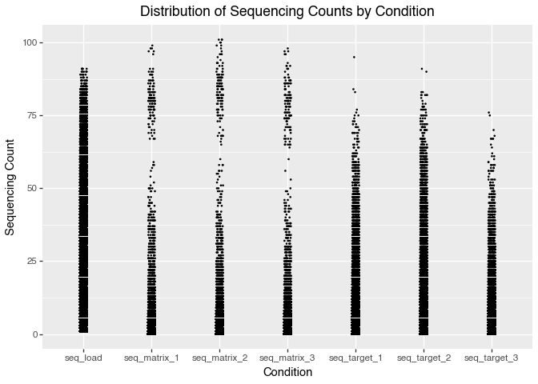
split1_random training subset.
A key observation from the plot is that some compounds have very high sequencing counts in the matrix (control) conditions. The distribution of matrix counts appears bimodal. This suggests that some molecules may bind strongly to the matrix itself, rather than only the intended protein target. Such molecules could give high signals in both the target and matrix conditions, making it challenging to tell if they’re true protein binders or simply show nonspecific, matrix-binding effects.

A high-density region near low counts suggests that most molecules have very low sequencing counts. This is typical of DEL data, where most barcodes are rare or absent in a given selection. This indicates a sparse count structure consistent with large library size and small per-barcode probabilities.

A better way to visualise this is to plot the cumulative distribution function (CDF) of the sequencing counts.
# Plot ECDF faceted by condition, and add vertical line at the 85% quantile for each
#| output: false
seq_conditions = [
'seq_target_1', 'seq_target_2', 'seq_target_3',
'seq_matrix_1', 'seq_matrix_2', 'seq_matrix_3'
]
# Melt data for plotnine
data_ecdf = data.melt(
id_vars=['molecule_hash'],
value_vars=seq_conditions,
var_name='condition',
value_name='seq_count'
)
# Compute the 85th percentile (quantile) for each condition
ecdf_thresholds = (
data_ecdf.groupby('condition')['seq_count']
.quantile(0.85)
.reset_index()
.rename(columns={'seq_count': 'quantile_85'})
)
# Merge quantiles back for vertical line drawing
# (not strictly necessary, just for convenience)
data_ecdf = data_ecdf.merge(ecdf_thresholds, on='condition', how='left')
# Prepare dataframe for vertical lines
vline_data = ecdf_thresholds.copy()
vline_data['y_start'] = 0
vline_data['y_end'] = 0.85
ecdf_plot = (
gg.ggplot(data_ecdf, gg.aes(x='seq_count'))
+ gg.stat_ecdf(size=1)
+ gg.geom_vline(
data=vline_data,
mapping=gg.aes(xintercept='quantile_85'),
linetype="dashed", color="red"
)
+ gg.geom_label(
data=vline_data.assign(y_pos=0.5),
mapping=gg.aes(
x='quantile_85',
y='y_pos',
label='round(quantile_85, 1)'
),
color="red",
fill="white",
size=11,
ha='left',
va='center',
nudge_x=1,
label_padding=0.4,
format_string="{:.0f}"
)
+ gg.facet_wrap('~condition', scales='free')
+ gg.labs(
x='Sequencing Count',
y='Cumulative Probability',
title='ECDF of Sequencing Counts by Condition (with 85% Quantile)'
)
+ gg.theme_bw()
+ gg.theme(strip_text=gg.element_text(size=11))
)
ecdf_plot.save("img/kindel_ecdf_by_condition.png")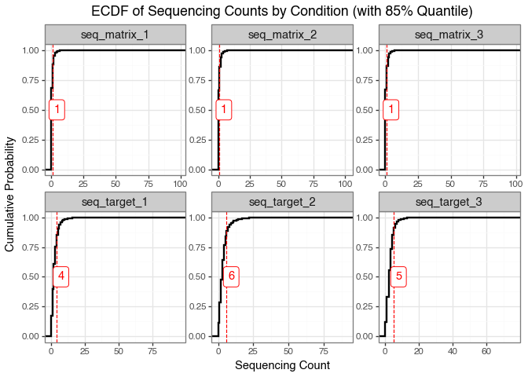
The ECDF indicates that most molecules have very low sequencing counts, and the patterns differ between the matrix and target selections. This difference reflects the distinct biological and technical contexts of each selection method.
For the matrix selection, the distribution mirrors the composition of the input library, suggesting that only a small subset of molecules bind to the matrix. This is a desirable outcome because it indicates limited non-specific binding.
In contrast, the target selection distribution shows higher counts at the 85th percentile, demonstrating that the target protein enriches for specific compounds. This suggests successful binding or functional selection of molecules by the target protein.
The appearance of discrete horizontal bands in the plot reflects repeated, identical sequencing count values across many molecules. This happens because next-generation sequencing produces integer counts, and low-abundance molecules are often observed at the same small values. As a result, low integer counts are repeated across many molecules, producing visible steps in the ECDF (Figure 6) and horizontal banding in scatter-style plots (Figure 7). This effect is especially noticeable when sequencing depth is modest relative to library complexity or when many molecules have similarly low abundance.

We next plot the frequency of each sequencing count value (\(\leq 20\)) for all conditions. This directly shows why the bands appear: thousands of molecules share the same low integer count.
# Using the already-melted data_ecdf from earlier
count_of_counts = (
data_ecdf
.groupby(['condition', 'seq_count'])
.size()
.reset_index(name='n_molecules')
)
# Truncate at, say, count=20 for visibility
count_of_counts_trunc = count_of_counts[count_of_counts['seq_count'] <= 20]
frequency_of_counts_plot = (
gg.ggplot(count_of_counts_trunc, gg.aes(x='factor(seq_count)', y='n_molecules'))
+ gg.geom_col(fill='steelblue', width=0.7)
+ gg.facet_wrap('~condition', scales='free_y')
+ gg.labs(
x='Sequencing Count',
y='Number of Molecules',
title='Frequency of Each Sequencing Count Value (≤ 20)'
)
+ gg.theme_bw()
+ gg.theme(axis_text_x=gg.element_text(size=8, rotation=90), figure_size=(15, 4))
)
frequency_of_counts_plot.save("img/kindel_frequency_of_counts.png")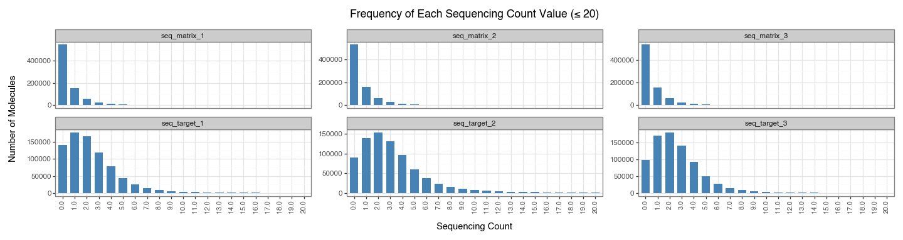
Figure 8 confirms that low integer counts dominate across conditions: counts such as 0, 1, 2, and 3 occur for very large numbers of molecules, while higher counts are much rarer. This pile-up at a few small integer values is what produces the visible step-like ECDF behaviour and discrete horizontal bands seen in the earlier plots.
Each experimental selection (both matrix and target) was performed in three independent replicates:

To assess reproducibility, we compare replicate-level sequencing proportions for both matrix and target selections. For each replicate, molecule counts are normalised by the replicate total and then compared pairwise. These comparisons are summarised in three complementary ways: scatter plots (Figure 10) show pattern shape and deviation from the \(y=x\) line, a Spearman correlation heatmap (Figure 11) provides a compact quantitative summary of pairwise agreement, and a replicate-support plot (Figure 12) shows how often molecules are observed at all across replicates.
data_seq_counts_matrix = data[['seq_matrix_1', 'seq_matrix_2', 'seq_matrix_3']]
# compute the proportion of the sequencing counts for the matrix conditions
data_seq_counts_matrix['seq_matrix_1_prop'] = data_seq_counts_matrix['seq_matrix_1'] / data_seq_counts_matrix['seq_matrix_1'].sum()
data_seq_counts_matrix['seq_matrix_2_prop'] = data_seq_counts_matrix['seq_matrix_2'] / data_seq_counts_matrix['seq_matrix_2'].sum()
data_seq_counts_matrix['seq_matrix_3_prop'] = data_seq_counts_matrix['seq_matrix_3'] / data_seq_counts_matrix['seq_matrix_3'].sum()
data_seq_counts_target = data[['seq_target_1', 'seq_target_2', 'seq_target_3']]
# compute the proportion of the sequencing counts for the target conditions
data_seq_counts_target['seq_target_1_prop'] = data_seq_counts_target['seq_target_1'] / data_seq_counts_target['seq_target_1'].sum()
data_seq_counts_target['seq_target_2_prop'] = data_seq_counts_target['seq_target_2'] / data_seq_counts_target['seq_target_2'].sum()
data_seq_counts_target['seq_target_3_prop'] = data_seq_counts_target['seq_target_3'] / data_seq_counts_target['seq_target_3'].sum()
p_1 =(
gg.ggplot(data_seq_counts_matrix, gg.aes(x = 'seq_matrix_1_prop', y='seq_matrix_2_prop'))
+ gg.geom_point(position='jitter', size=0.1, alpha=0.5)
+ gg.geom_abline(slope=1, intercept=0, color='red')
+ gg.labs(x='Sequencing Proportion for Matrix 1', y='Sequencing Proportion for Matrix 2')
)
p_2 = (
gg.ggplot(data_seq_counts_matrix, gg.aes(x = 'seq_matrix_1_prop', y='seq_matrix_3_prop'))
+ gg.geom_point(position='jitter', size=0.1, alpha=0.5)
+ gg.geom_abline(slope=1, intercept=0, color='red')
+ gg.labs(x='Sequencing Proportion for Matrix 1', y='Sequencing Proportion for Matrix 3')
)
p_3 = (
gg.ggplot(data_seq_counts_matrix, gg.aes(x = 'seq_matrix_2_prop', y='seq_matrix_3_prop'))
+ gg.geom_point(position='jitter', size=0.1, alpha=0.5)
+ gg.geom_abline(slope=1, intercept=0, color='red')
+ gg.labs(x='Sequencing Proportion for Matrix 2', y='Sequencing Proportion for Matrix 3')
)
p_4 =(
gg.ggplot(data_seq_counts_target, gg.aes(x = 'seq_target_1_prop', y='seq_target_2_prop'))
+ gg.geom_point(position='jitter', size=0.1, alpha=0.5)
+ gg.geom_abline(slope=1, intercept=0, color='red')
+ gg.labs(x='Sequencing Proportion for Target 1', y='Sequencing Proportion for Target 2')
)
p_5 = (
gg.ggplot(data_seq_counts_target, gg.aes(x = 'seq_target_1_prop', y='seq_target_3_prop'))
+ gg.geom_point(position='jitter', size=0.1, alpha=0.5)
+ gg.geom_abline(slope=1, intercept=0, color='red')
+ gg.labs(x='Sequencing Proportion for Target 1', y='Sequencing Proportion for Target 3')
)
p_6 = (
gg.ggplot(data_seq_counts_target, gg.aes(x = 'seq_target_2_prop', y='seq_target_3_prop'))
+ gg.geom_point(position='jitter', size=0.1, alpha=0.5)
+ gg.geom_abline(slope=1, intercept=0, color='red')
+ gg.labs(x='Sequencing Proportion for Target 2', y='Sequencing Proportion for Target 3')
)
replicate_corr_plot = (p_1 | p_2 | p_3) / (p_4 | p_5 | p_6) + gg.theme(figure_size=(15, 8))
replicate_corr_plot.save("img/Replicates_Correlations.png", verbose=False)In Figure 10, stronger clustering along the red \(y=x\) line indicates better agreement between replicate pairs. Agreement is generally clearer for matrix replicates and for higher-abundance molecules. The broad spread at very low proportions is expected in sparse DEL data, where sampling noise dominates; this reduces apparent concordance for low-abundance molecules without necessarily indicating experimental failure.
To complement Figure 10, we summarise replicate agreement with a Spearman correlation matrix. Spearman correlation is rank-based, so it asks whether molecules ranked high in one replicate also tend to rank high in another, without assuming a strictly linear relationship.
# collect replicate counts
rep_counts = data[
[
"seq_matrix_1", "seq_matrix_2", "seq_matrix_3",
"seq_target_1", "seq_target_2", "seq_target_3",
]
].copy()
# convert counts to within-replicate proportions
for col in rep_counts.columns:
rep_counts[f"{col}_prop"] = rep_counts[col] / rep_counts[col].sum()
rep_prop_cols = [
"seq_matrix_1_prop", "seq_matrix_2_prop", "seq_matrix_3_prop",
"seq_target_1_prop", "seq_target_2_prop", "seq_target_3_prop",
]
# Spearman correlation matrix across replicate proportions
corr_tbl = rep_counts[rep_prop_cols].corr(method="spearman")
# lower-triangle heatmap
mask = np.triu(np.ones_like(corr_tbl, dtype=bool))
plt.figure(figsize=(6, 5))
ax = sns.heatmap(
corr_tbl,
mask=mask,
annot=True,
fmt=".2f",
cmap="vlag",
vmin=-1,
vmax=1,
square=True,
cbar_kws={"shrink": 0.8},
)
ax.set_title("Spearman Correlation Matrix Across Replicates (Proportions)")
plt.tight_layout()
plt.savefig("img/kindel_replicate_heatmap.png")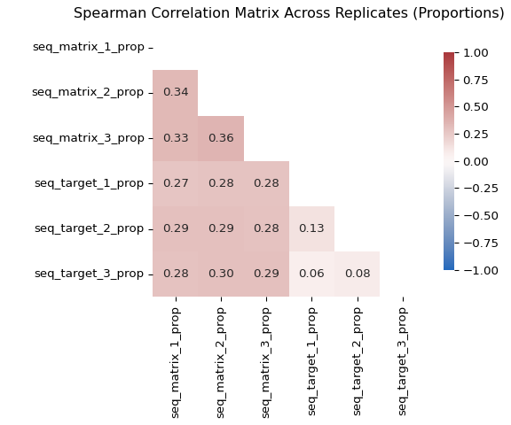
One more view is useful here: for each molecule, we count in how many of the three replicate experiments the sequencing count is greater than zero. This gives a simple measure of replicate support. A molecule detected in all three replicates has much stronger support than a molecule detected in only one replicate, while a molecule with zero counts in all replicates is a clear example of dropout in that condition. Framing the data this way makes the prevalence of dropout immediately visible and complements the pairwise correlation plots above, which show agreement only among the molecules that are observed.
replicate_support = pd.concat(
[
pd.DataFrame({
"selection": "Matrix",
"n_nonzero_replicates": (data[["seq_matrix_1", "seq_matrix_2", "seq_matrix_3"]] > 0).sum(axis=1),
}),
pd.DataFrame({
"selection": "Target",
"n_nonzero_replicates": (data[["seq_target_1", "seq_target_2", "seq_target_3"]] > 0).sum(axis=1),
}),
],
ignore_index=True,
)
support_summary = (
replicate_support
.groupby(["selection", "n_nonzero_replicates"])
.size()
.reindex(
pd.MultiIndex.from_product(
[["Matrix", "Target"], [0, 1, 2, 3]],
names=["selection", "n_nonzero_replicates"],
),
fill_value=0,
)
.reset_index(name="n_molecules")
)
support_summary["percent"] = (
100 * support_summary["n_molecules"]
/ support_summary.groupby("selection")["n_molecules"].transform("sum")
)
support_summary["replicate_support_label"] = pd.Categorical(
support_summary["n_nonzero_replicates"].map({
0: "Detected in 0 replicates",
1: "Detected in 1 replicate",
2: "Detected in 2 replicates",
3: "Detected in 3 replicates",
}),
categories=[
"Detected in 0 replicates",
"Detected in 1 replicate",
"Detected in 2 replicates",
"Detected in 3 replicates",
],
ordered=True,
)
replicate_support_plot = (
gg.ggplot(
support_summary,
gg.aes(
x="replicate_support_label",
y="percent",
fill="selection",
),
)
+ gg.geom_col(width=0.7, show_legend=False)
+ gg.facet_wrap("~selection", nrow=1)
+ gg.labs(
x="Detection across replicates",
y="Percent of molecules",
title="Replicate support differs strongly between matrix and target selections",
)
+ gg.theme_bw()
+ gg.theme(
figure_size=(10, 4),
axis_text_x=gg.element_text(rotation=20, ha="right"),
)
)
replicate_support_plot.save("img/kindel_replicate_support.png")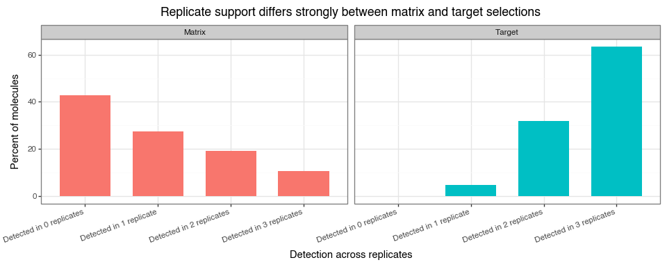
Together, Figure 10, Figure 11, and Figure 12 support a consistent interpretation:
within-condition replicate correlations are positive and informative (typically stronger for matrix than target), while low-abundance regions remain noisy due to sampling variation. Cross-condition correlations (matrix vs target) are expected to be lower because they reflect different biological/technical mechanisms.
The replicate-support view adds an important nuance: many molecules are absent from all three matrix replicates, whereas target counts are much more often observed in two or three replicates. This reinforces two modelling points:
When fitting count models, this replicate-to-replicate variation should be modelled explicitly rather than ignored.
Pre-selection counts are given by the seq_load column. They represent the abundance of each molecule in the library before any matrix or target selection takes place. That is, they capture how many copies of each barcode were present before exposure to either condition. This pre-selection abundance information helps distinguish true post-selection enrichment from molecules that were simply more abundant in the input library.

Molecules might have higher pre-selection counts due to:
We start by plotting the relationship between pre-selection counts and post-selection counts for the matrix and target selection conditions. Here, we take the mean post-selection count across the three matrix replicates and the three target replicates, then log-transform both the pre-selection counts and the mean post-selection counts to make the plot easier to interpret.
rel = data.copy()
rel["matrix_mean"] = rel[["seq_matrix_1", "seq_matrix_2", "seq_matrix_3"]].mean(axis=1)
rel["target_mean"] = rel[["seq_target_1", "seq_target_2", "seq_target_3"]].mean(axis=1)
rel["log_seq_load"] = np.log1p(rel["seq_load"])
rel["log_matrix_mean"] = np.log1p(rel["matrix_mean"])
rel["log_target_mean"] = np.log1p(rel["target_mean"])
rel_long = pd.concat(
[
rel[["log_seq_load", "log_matrix_mean"]].rename(columns={"log_seq_load": "x", "log_matrix_mean": "y"}).assign(panel="Load vs Matrix"),
rel[["log_seq_load", "log_target_mean"]].rename(columns={"log_seq_load": "x", "log_target_mean": "y"}).assign(panel="Load vs Target"),
],
ignore_index=True,
)
pre_post_scatter_plot = (
gg.ggplot(rel_long, gg.aes(x="x", y="y"))
+ gg.geom_point(alpha=0.1, size=0.25)
+ gg.geom_abline(slope=1, intercept=0, color="red")
+ gg.facet_wrap("~panel", scales="free")
+ gg.labs(
x="log1p (seq_load)",
y="log1p (matrix_mean) or log1p (target_mean)",
title="Pairwise relationships: seq_load, matrix, and target"
)
+ gg.theme_bw()
)
pre_post_scatter_plot.save("img/kindel_pre_post_scatter.png", verbose=False)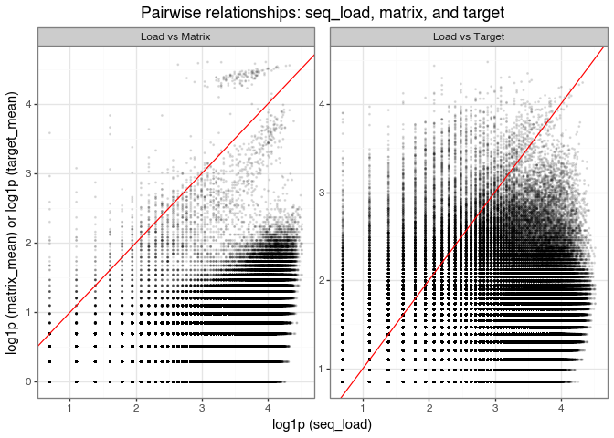
seq_load, matrix mean, and target mean counts on the log scale.
The scatter plots of log-transformed pre-selection counts (seq_load) versus post-selection mean counts (matrix and target) show three consistent patterns:
Dense cloud below the diagonal:
Most molecules lie below the \(y=x\) line, meaning post-selection counts are lower than pre-selection counts. This is expected for non-binders that are depleted during selection. The visible horizontal and vertical banding reflects integer count discreteness after log transformation.
High-count points near the diagonal:
Molecules near the diagonal have post-selection counts close to their initial abundance. Many of these likely reflect input-library overrepresentation (for example, synthesis or sequencing bias as mentioned above) rather than selective enrichment. So, large counts alone should not be interpreted as evidence of binding.
Points above the diagonal (enrichment):
Molecules above \(y=x\) have higher post-selection than pre-selection counts. In “Load vs Matrix,” these are plausible non-specific matrix binders; in “Load vs Target,” they are candidate target binders (e.g., DDR1). A larger above-diagonal population in the target panel suggests enrichment beyond background matrix effects.
Figure 14 shows the relationship between pre- and post-selection counts for the matrix and target selection conditions. We can also provide a concise quantitative summary of how strongly these variables move together.
Again, Spearman correlation is a good choice since it is rank-based, asking whether molecules with higher seq_load also tend to have higher matrix or target counts, without assuming a linear relationship. The Spearman correlation matrix therefore complements Figure 14 by turning the visual trends into directly comparable pairwise association measures.
# compute the Spearman correlation matrix
corr_tbl = rel[["log_seq_load", "log_matrix_mean", "log_target_mean"]].corr(method="spearman")
# Plot the Spearman correlation matrix as a lower triangle heatmap
# Create a mask for the upper triangle
mask = np.triu(np.ones_like(corr_tbl, dtype=bool))
plt.figure(figsize=(5, 4))
ax = sns.heatmap(
corr_tbl,
mask=mask,
annot=True,
fmt=".2f",
cmap="vlag",
vmin=-1,
vmax=1,
square=True,
cbar_kws={"shrink": .8}
)
plt.title("Spearman Correlation Matrix (log-transformed)\nPre-selection, Matrix, Target")
plt.tight_layout()
plt.savefig("img/kindel_pre_post_corr.png")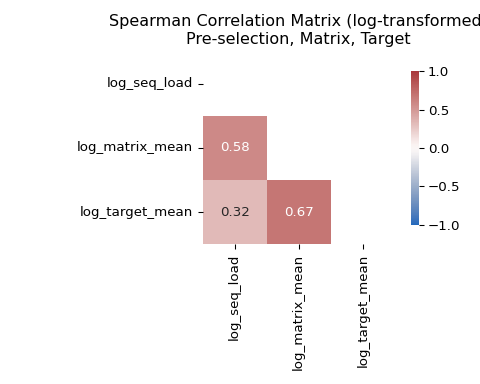
seq_load), matrix counts, and target counts.
The correlation matrix shows high correlation between seq_load and matrix counts, and lower correlation between seq_load and target counts. This is consistent with the visual patterns in Figure 14: matrix counts mostly track library composition and have a tighter scatter, whereas target counts reflect enrichment rather than just library composition and therefore have a looser scatter.
Another useful quantity to examine is the correlation between matrix and target counts. High correlation here suggests that target counts may be dominated by background effects.
Exploring the relationship between matrix and target counts helps us understand whether the target counts are dominated by background effects or are truly enriched by the target protein.

rel_long = pd.concat(
[
rel[["log_matrix_mean", "log_target_mean"]].rename(columns={"log_matrix_mean": "x", "log_target_mean": "y"}).assign(panel="Matrix vs Target"),
],
ignore_index=True,
)
matrix_target_scatter_plot = (
gg.ggplot(rel_long, gg.aes(x="x", y="y"))
+ gg.geom_point(alpha=0.1, size=0.25)
+ gg.geom_abline(slope=1, intercept=0, color="red")
+ gg.labs(x="log1p (matrix_mean)", y="log1p (target_mean)", title="Pairwise relationships: matrix, target")
+ gg.theme_bw()
)
matrix_target_scatter_plot.save("img/kindel_matrix_target_scatter.png", verbose=False)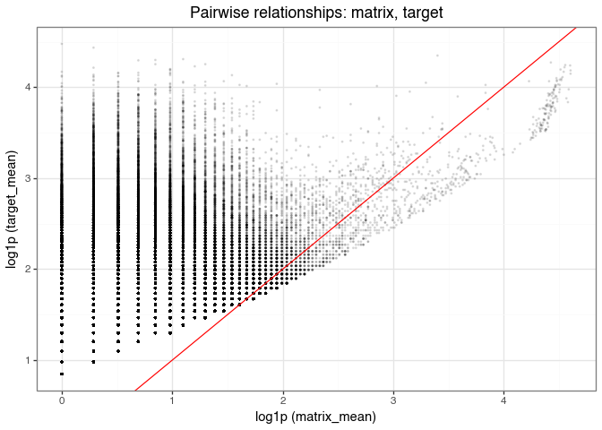
This plot compares the mean matrix and target counts (across three replicates) for each molecule, with the red line indicating equality (i.e., \(y = x\)). The vertical lines are due to integer-valued counts in the matrix and target selections.
While there is a general positive relationship (0.67 based on the Spearman correlation in Figure 15), reflecting that target counts include matrix-derived background, many points appear above the diagonal. In other words, many molecules have higher target counts than matrix counts. This indicates specific enrichment in the target condition beyond background effects.
Because a molecule can be abundant in the input library and still show non-specific matrix binding, it is useful to combine the previous two ideas into a single diagnostic. A simple way to do that is to plot a crude target-over-matrix enrichment score against pre-selection abundance. This is not a substitute for a probabilistic model, but it provides an intuitive preview of the modelling target.
rel["log2_target_over_matrix"] = np.log2((rel["target_mean"] + 1) / (rel["matrix_mean"] + 1))
enrichment_plot = (
gg.ggplot(
rel,
gg.aes(x="log_seq_load", y="log2_target_over_matrix"),
)
+ gg.geom_bin_2d(bins=70)
+ gg.geom_hline(yintercept=0, color="#d7301f", linetype="dashed", size=0.7)
+ gg.scale_fill_gradient(
low="#deebf7",
high="#08519c",
name="Number of\nmolecules",
)
+ gg.labs(
x="log1p(pre-selection count)",
y="log2((target mean + 1) / (matrix mean + 1))",
title="Target-over-matrix enrichment across pre-selection abundance",
)
+ gg.theme_bw()
+ gg.theme(
figure_size=(7, 5),
panel_grid_minor=gg.element_blank(),
panel_grid_major=gg.element_line(color="#e5e5e5", size=0.3),
plot_title=gg.element_text(weight="bold"),
)
)
enrichment_plot.save("img/kindel_target_over_matrix_enrichment_vs_load.png", verbose=False)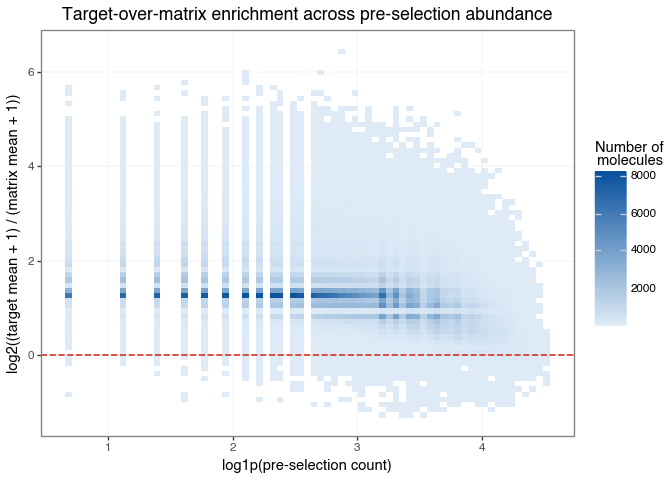
This plot brings the previous EDA results together in a single view. The x-axis shows how abundant a molecule was before selection, while the y-axis shows whether its average target count is higher or lower than its average matrix count.
The dashed horizontal line at zero is the key reference point:
Most importantly, molecules with positive enrichment appear across a range of pre-selection abundances, not only among the most abundant compounds in the input library. The quantity we care about is not raw count size by itself, but target-specific enrichment after accounting for both matrix background and input abundance.
The mean–variance relationship is a useful diagnostic for over/under-dispersion.
In DEL data, underdispersion is often rare and overdispersion is often the norm.
The following factors contribute to inflating the variance above the mean:
True underdispersion is uncommon; when variance appears below the mean, it is often due to small-sample noise (e.g., with only a few replicates) rather than a genuinely underdispersed process.
As seen in Figure 3, the sequencing count distributions are right-skewed and heavy-tailed. That suggests large variability, but it does not by itself establish overdispersion in the strict statistical sense. To assess that directly, we compare the sample mean and variance across replicates for the matrix and target conditions.
# Compute mean and variance for both matrix and target replicates
mv = pd.DataFrame({
'mean_matrix': data[['seq_matrix_1', 'seq_matrix_2', 'seq_matrix_3']].mean(axis=1),
'var_matrix': data[['seq_matrix_1', 'seq_matrix_2', 'seq_matrix_3']].var(axis=1),
'mean_target': data[['seq_target_1', 'seq_target_2', 'seq_target_3']].mean(axis=1),
'var_target': data[['seq_target_1', 'seq_target_2', 'seq_target_3']].var(axis=1),
})
# Melt for long format for plotting
mv_long = pd.concat([
mv[['mean_matrix', 'var_matrix']].rename(columns={'mean_matrix': 'mean', 'var_matrix': 'var'}).assign(condition='Matrix'),
mv[['mean_target', 'var_target']].rename(columns={'mean_target': 'mean', 'var_target': 'var'}).assign(condition='Target'),
], ignore_index=True)
mean_var_plot = (
gg.ggplot(mv_long, gg.aes(x='mean', y='var'))
+ gg.geom_point(size=0.3, alpha=0.3)
+ gg.geom_abline(slope=1, intercept=0, color='red', linetype='dashed')
+ gg.scale_x_log10() + gg.scale_y_log10()
+ gg.facet_wrap('~condition', scales='free')
+ gg.labs(
x='Mean count',
y='Variance',
title='Mean–Variance by Condition: points above red line indicate overdispersion'
)
+ gg.theme_bw()
)
mean_var_plot.save("img/kindel_mean_variance.png", verbose=False)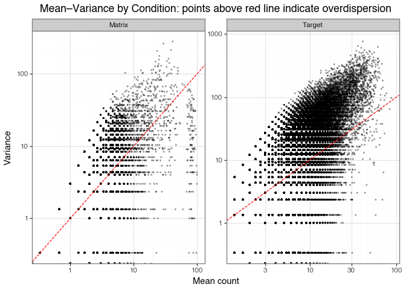
The red line marks the Poisson benchmark, where the variance equals the mean:
\[ \mathrm{Var}(X) = \mathrm{E}[X] \]
Points above the red line have variance greater than the mean:
\[ \mathrm{Var}(X) > \mathrm{E}[X] \]
Both matrix and target conditions show clear overdispersion: most points lie above the red Poisson line across the count range.
In the matrix condition, the extra spread likely reflects technical noise (PCR, sequencing) together with non-specific matrix binding. Molecules with similar mean counts can still vary substantially across replicates.
In the target condition, the spread includes the same technical sources plus biological variability from true target binding. Enriched binders can therefore have both high mean and high variance, while non-binders remain concentrated in the low-count region.
In the matrix condition, the points with high mean and low variance on the right side of the plot likely correspond to the compounds present in all three replicates, as discussed in the Matrix binders section.
The horizontal lines in the plots are due to integer-valued counts in the matrix and target selections, as mentioned in the previous section.
We choose likelihood functions based on two EDA findings:
Rare-event, high-depth counts:
As shown in Strong low-count mass across all conditions, most molecules have very low counts. This sparse regime is well described by independent-barcode (rate-based) models such as Poisson, Negative Binomial, and Poisson-Lognormal.
In this setting, fixed-depth (composition-based) models become approximately equivalent to rate-based models, which further supports focusing on the independent-barcode view. (See Two data-generation perspectives for DEL counts, Multinomial / Dirichlet-Multinomial, and Binomial / Beta-Binomial.)
Overdispersion:
In Relationship between mean and variance of the sequencing counts, the variance is consistently larger than the mean, indicating overdispersion. This rules out a pure Poisson assumption and favors likelihoods that explicitly model extra-Poisson variability.
Taken together, the data support Negative Binomial and Poisson-Lognormal as the most appropriate likelihoods for DEL rate-based count modelling in this analysis.
The EDA highlights three non-target or technical effects that should be modelled explicitly because they can distort post-selection counts.
Matrix-driven background: As discussed in Matrix binders, some compounds are consistently enriched in the matrix condition, and this pattern is reproducible across replicates (see Correlations between replicates). In addition, Relationship between matrix and target counts shows that matrix and target counts are correlated. Together, these results indicate that part of the target signal can reflect non-specific matrix binding rather than true target affinity.
Library composition effects: Relationship between pre and post-selection counts shows that pre-selection abundance is correlated with post-selection counts. This implies that baseline library representation can propagate into both matrix and target readouts, independently of binding strength.
Replicate-level variation: The Correlations between replicates analysis (including the Spearman summary in Figure 11) shows that replicate agreement is substantial but not perfect, especially in low-abundance regions where sampling and technical noise are strongest. This indicates that replicate-to-replicate shifts should be modelled explicitly (e.g., with replicate random effects or condition-specific replicate offsets), rather than absorbed into enrichment parameters.
In practice, likelihood parameterisation should separate background structure (matrix effects and input composition), replicate-level technical variation, and true target-dependent enrichment. Doing so improves both the accuracy of enrichment estimates and the biological interpretability of model outputs.
At this stage, it is useful to distinguish clearly between the data we observe, the latent quantity we want to infer, and the practical goal of the model.
seq_load), matrix counts, and target counts across replicates. These are the quantities modelled directly by the likelihood.This distinction matters because a good probabilistic DEL model should treat observed counts as noisy evidence, not as the binding signal itself.
Taken together, the EDA results suggest that observed counts are not direct measurements of binding. They are the combined result of several overlapping causes, only one of which is the target-binding signal we care about.
A causal sketch makes this explicit by mapping which latent factors feed into the observed counts.
Drawing on everything identified in the EDA, the four latent causes of DEL sequencing counts are:
Figure 20 summarises this structure in three layers. On the left are the latent causes: library composition and input abundance, matrix-background propensity, target-binding propensity, and condition-specific replicate effects (sampling, PCR, and run variation). These feed into the middle layer of condition-specific latent count intensities for pre-selection, matrix, and target. The right layer contains the observed sequencing counts: seq_load for pre-selection, together with replicated matrix (seq_matrix_1, seq_matrix_2, seq_matrix_3) and target (seq_target_1, seq_target_2, seq_target_3) read counts, which are noisy draws from those latent intensities.
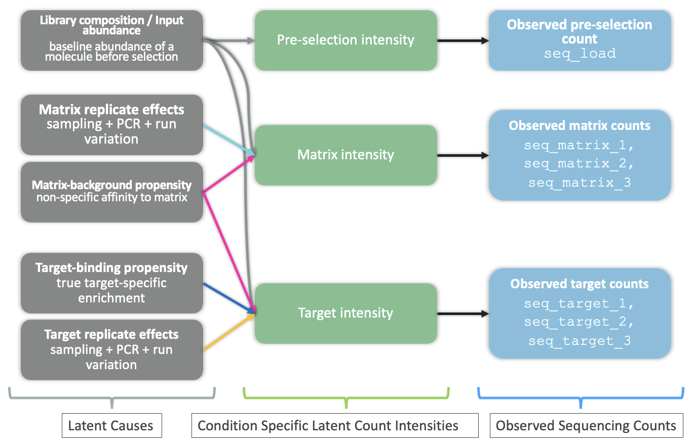
The causal sketch also makes it clear why a simple enrichment ratio, for example, dividing target counts by matrix counts, is not a satisfying answer to the DEL hit identification problem. Such a ratio partially cancels the matrix background, but it ignores library composition entirely, so a molecule that is abundant in the input library will still look enriched even if it does not bind the target.
Figure 20 is the blueprint for the modelling approach in Part 2. Each latent cause is translated into a specific component of a probabilistic count model so that true binding signal can be separated from background and technical noise.
In this post, we focused on the statistical principles needed to model DEL sequencing counts. The exploratory analyses showed that the data are sparse, dominated by low counts, and clearly overdispersed, which makes rate-based count models such as the Negative Binomial and Poisson-Lognormal more appropriate than simple Poisson models. At the same time, the EDA highlighted three effects that any useful DEL model should handle explicitly: matrix-driven background, library composition, and replicate-level technical variation. These observations motivate both the likelihood choice and the structure of the model introduced in Part 2.
These observations have an important modelling implication: observed post-selection counts should not be interpreted as direct evidence of binding without accounting for background and technical structure. A good DEL model should explain noisy counts through a probabilistic likelihood while separating true enrichment signal from non-specific matrix effects, input abundance, and replicate-to-replicate variability.
In the next post, we will build on this principle by specifying and fitting a count-based probabilistic denoising model for DEL data. The goal will be to model observed counts directly while inferring latent enrichment or binding-related signal in a way that is more robust to technical and compositional artefacts.